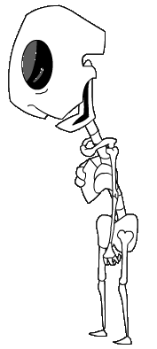
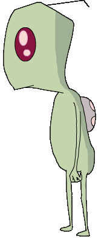

|
FEATURES
Screenshot Galleries
Transcripts
Cancelled
Episodes
Irken
Guide
ENCYCLOPEDIAS
A-Z Bios
Seating Charts
Planet
Guide
Alien
Species
Invaders
The Resisty
OTHER STUFF
Updates
Fan
Fiction/Art
Lizard Boy Shrine
Blotch Test (POS 2000)
Deleted Scenes
Links
THE MONKEY
Info
Games
Cursors
GUESTBOOK
View
Sign
E-mail

| |
|
Irken Biology |
|
-Irken
Biology- -Irken Society- -Irken Classes/Jobs-
-Irken Military Vehicles- -Invaders-
|
|
Internal Structure
|
|
 |
Irkens
have a skeletal structure not unlike those of humans.
Dib's
X-Scope provides a good internal view of the Irken organs. The known
Irken organs are the Squeedly Spooch, the heart, and the brain.
The
Squeedly Spooch is mainly located in the area where the human stomach
is. From the X-Scope picture, it appears to be a large jumbled
intestine-looking organ that stretches up through the rest of the body.
Since it is so large, it may be a sort of super organ that does the
combined duties of many human organs.
The
smaller organ in the x-scope picture that can be seen poking up behind
the Squeedly Spooch is most likely the Irken heart. The Irken heart
serves the same purpose as the human heart, in that in pumps blood
through the veins.
Irkens
also have a brain, although without
the Pak, the intelligence begins to drain.
The
Pak, which is almost an organ in itself, is attached to every Irken's
spine.
Irkens
may have square cells, as Zim's
computer shows. |
|
PAKS
|
|
|
Every
Irken has a Pak, which is attached to their spines at birth. Paks are
vital to the host's life; if the Pak is removed, the Irken's 10 minute
lifeclock begins. Over the course of 10 minutes, the Irken's
intelligence and life force begin to diminish until the Irken finally
dies once the time is up. The separated Pak will latch onto a new host
if given the chance. The Pak contains its host's Memory Drive (where the
Irken's memories are stored), the Atmospheric Processor (which converts
any atmosphere into a breathable substance), and the Charging Cell
(probably the Irken's power supply). Their personality is also housed in
the Pak, so if the Pak finds a new host, the old personality will begin
to overpower them.
The occupation of each Irken is programmed into their Paks. Any change
in jobs is done by re-encoding the Pak. The
Pak also has other helpful functions. Mechanical
spider legs can extend from it to give the host a quicker and more
agile means of transportation. The legs can also turn into
laser
cutters as well as a shield
generator, or can emerge with a
claw
attachment. Other devices include a
communicator,
an ID plug of sorts (which Zim uses to try and purchase a snack on
Devastis), an object transporter,
space jets and a
binocular
helmet. |
|
External Structure
|
|

|
Irkens resemble the typical little green man concept (green skin,
antennae) with a more insectoid look to them. Their antennae are primarily
used to express emotion, rising up and down depending on how that Irken
feels. At the Great Assigning, the Irkens salute the Tallest by
wiggling
their antennae. Every other instance when an Irken has given a salute,
they have done so with their hands in
the same fashion as humans though. Although Irkens don't have any nostrils, they
seem to smell from the same area as humans. Irken eyes come in three
colors: Red, Purple, and Green (as well as different shades of these
colors). Red eyes seem to be the most common and Green eyes are rare.
Irken eyes have a shine that is lost when the Irken dies or becomes
brutally
retarded. Invaders have ocular implants,
enhancing and strengthening their eyes. Whether or not average Irkens also
have ocular implants is unknown. Irken
tongues resemble
red earthworms and can extend quite long. Irken
teeth
are all interconnected in rows to form one long tooth. Irkens also do not
require sleep.
Irken females are rarer than males, though this might just be in the
military. Irken females do have some physical differences, but no major biological differences. Male and female Irkens are devoid of sexual
organs. It is most likely that the Irkens started out as a race that could
reproduce sexually, but once the mass test-tube method was invented, they
lost this ability overtime. See the Irken
Society section for more speculation about that. Whatever the back story
is, Irken females do have some minor differences, visible in their facial features.
Females have eyelashes and curled antennae. Irkens don't grow much
during their life, but they do grow. They start out as
Smeets
(Irken babies) and then grow towards their final height (this growth may
or may not be separated into multiple spurts). The difference
between the Tallest and the rest of the Irkens has something to do with
their growth spurts. Young Tallest are the same size as the average
developing Irken, but then they suddenly go through a massive
lengthening that puts them at the forefront of the Irken Empire. This
probably means that taller Irkens have growth spurts that continue on
for a longer time than the rest of the race. Irken diet seems to consist of snack foods and soda. Some Earth
food and drink cause pain to Irkens. Water, and some
products that consist mainly of water, sizzles on contact with Irken skin.
Select foods, such as bologna, also burn Irkens or cause allergic
reactions. This isn't a problem for the Irkens though, since Earth is so
far away from them. |
|

{kind=link}
{kind=link}
{kind=link}
{kind=link}
{kind=link}
{kind=link}
{kind=link}
{kind=link}
{kind=link}
{kind=link}
{kind=link}
{kind=link}
{kind=link}
{kind=link}
{kind=link}
{kind=link}
{kind=link}
{kind=link}